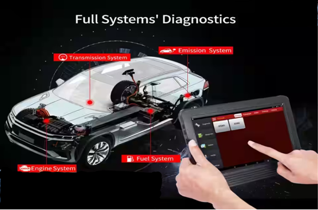

This process involves identifying every issue within the vehicle through the use of scanners. The process unfolds in three distinct steps:
• Scanning Vehicle: This initial step encompasses scanning the vehicle comprehensively.
• Creation of a 3D Model from Scanned Data: The second phase involves translating the gathered scanning data into a detailed 3D model.
• Analysis and Finalization: Lastly, an in-depth analysis is conducted on the 3D model, leading to the finalization of the diagnostic process.
By adhering to these three sequential stages, we can effectively detect and address any problems present in the vehicle.
STEP 1 : SCANNING VEHICLE
.png)
The two images above depict the setup of a room equipped with pre-installed scanning equipment. Essentially, we will position the vehicle inside the room. Following that, we will initiate each scan simultaneously. The under vehicle scanner is illustrated by the glass panel beneath the vehicle.
STEP 2 : DEVELOPING 3D MODEL

The above image represents the development of 3D image of the scanned vehicle. The image will take the information from the scanners and develpos it. This image shows the blue print of the vehicle, from which we can identify major and minor defects in the vehicle.
STEP 3 : ANALYSIS AND FINALIZATION

In this step, we will analyze the gathered information and organize it systematically. This encompasses details about the engine condition, damage to internal parts, battery health, and more. Additionally, it includes data collected from the vehicle's software.

We will compile a comprehensive report outlining the identified problems and the required measures to prevent their recurrence. This report will also present the current state of the vehicle, aiding customers in obtaining the best selling price and assisting potential buyers in making informed decisions.

In this image we will provide the 3D model of the car with defects.
SCANNERS AND USES:
1. COMPUTED TOMOGRAPHY (CT) SCANNER:

Computed Tomography Scanner commonly known as CT Scanner which uses X-Rays to scan object by sending thousands of 2D rays and creates a 3D model of it. By this we can able to spot the small defects. It emits the rays by rotating around the vehicle in such-a-way that the rays fall on each and every part.
2. MUON SCANNER:

Muon Scanner which are commonly used in security areas like cargo and airport vehicle transportation check. With the help of this scanner, we can identify the objects present inside the vehicle. This scanner helps us to differentiate the cracked objects inside the engine.
3.EM-WAVE SCANNER:

Electro-Magnetic Wave Scanner commonly known as EM-Wave Scanner which emits EM waves into a battery or an electronic device. This scanner helps us to identify wiring problem in the vehicle and internal damage inside the battery.
4. SENSOR NETWORKS:
Modern vehicles are equipped with embedded sensors that continually monitor various parameters such as tire pressure and engine performance. By collecting and analysing data from these sensors, valuable insights into the vehicle's condition can be gained. These insights can be used to provide customers with safety advice and precautions to prevent minor damages.
With the growing demand for autonomous cars, which rely on numerous sensors for operation, regular servicing becomes crucial for maintaining proper functionality. To address this need, a device can be connected to the dashboard to retrieve information from each sensor. This approach allows for the capture of warnings and alerts displayed by the sensors. By analysing these warnings, it becomes possible to understand the underlying reasons and take appropriate actions
In essence, this system leverages sensor data to offer real-time advice and recommendations to vehicle owners, enhancing safety and ensuring the optimal performance of autonomous vehicles.
5. THERMAL CAMERA SCANNER:

Thermal Camera Scanning is the method in which we will use thermal cameras for scanning. Thermal cameras, also known as infrared cameras or thermographic cameras, work by detecting and capturing the infrared radiation emitted by objects based on their temperature. This technology allows them to create images that show variations in temperature across a scene, rather than the visible light that traditional cameras capture. These can be used to scan engine, cooling systems, heating systems, turbo and super chargers etc.